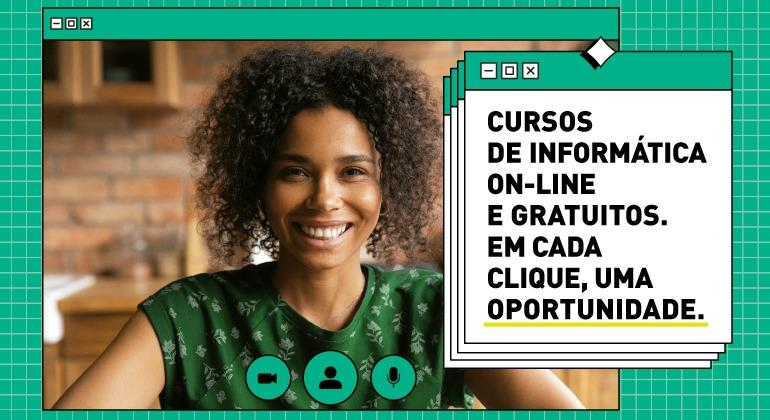

A Prefeitura de Belo Horizonte, por meio da Prodabel, oferece aos cidadãos a oportunidade de fazer cursos gratuitos de qualificação. Por acreditar que a tecnologia representa o presente, o futuro e, consequentemente, mais oportunidades, a Prodabel trabalha pela implantação da Inclusão Digital em Belo Horizonte. A iniciativa atende prioritariamente jovens e adultos de regiões vulneráveis, porém, qualquer pessoa interessada pode se inscrever nos cursos. Com conteúdos disponíveis na plataforma EAD, os alunos terão acesso a aulas atuais e didáticas, materiais de apoio, atividades de fixação, central de atendimento e encontros virtuais com materiais complementares.


Perguntas no email: info@prodabel.com